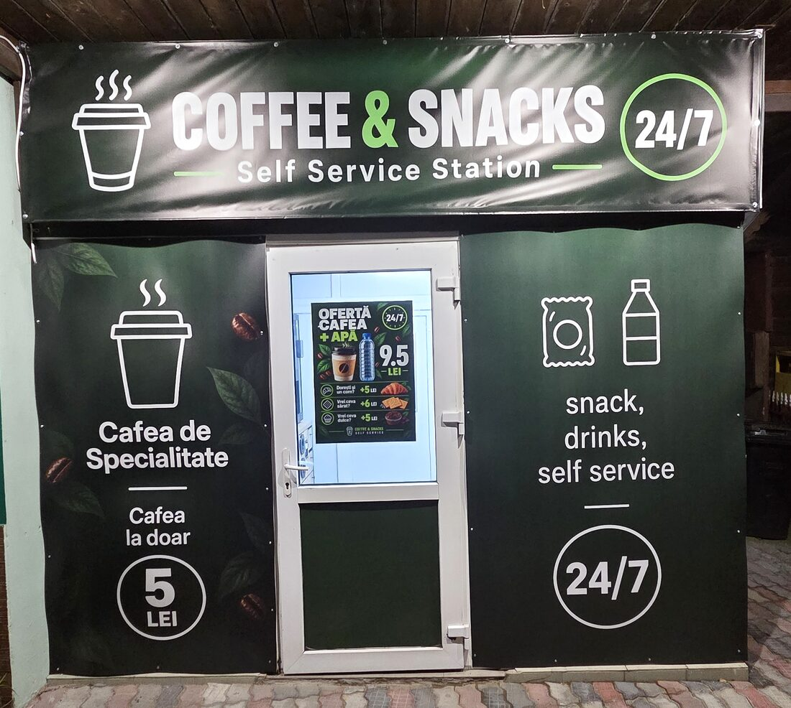
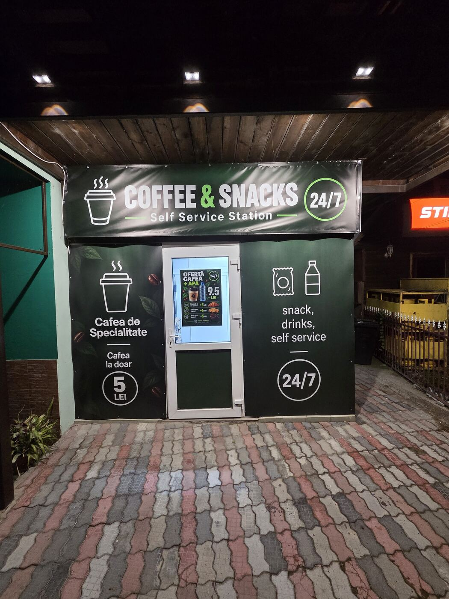
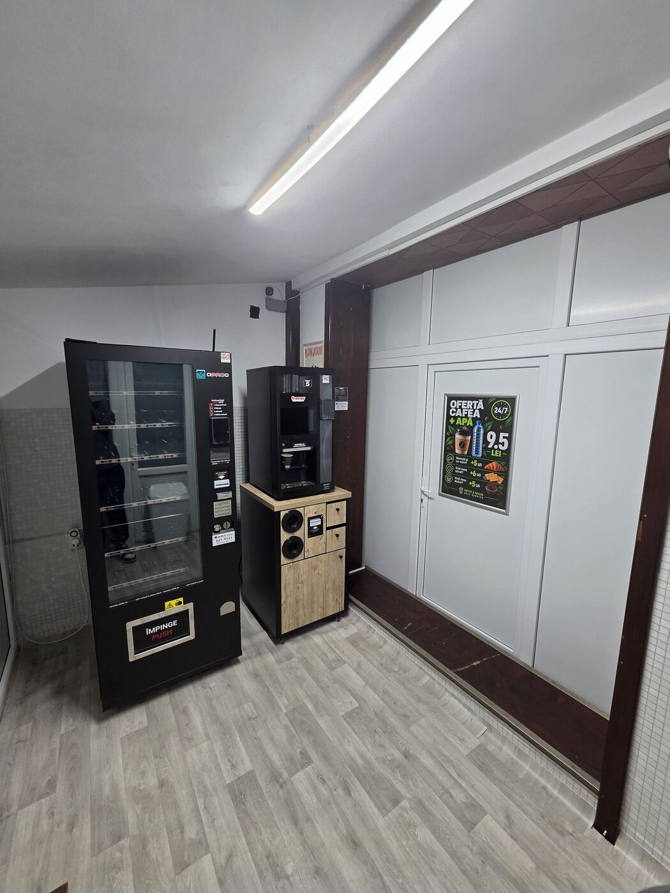
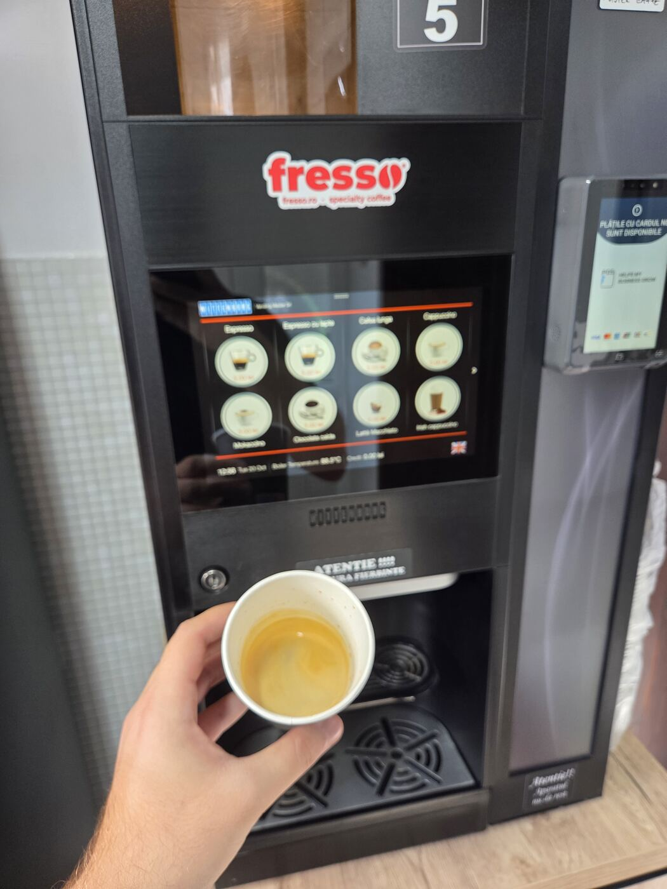
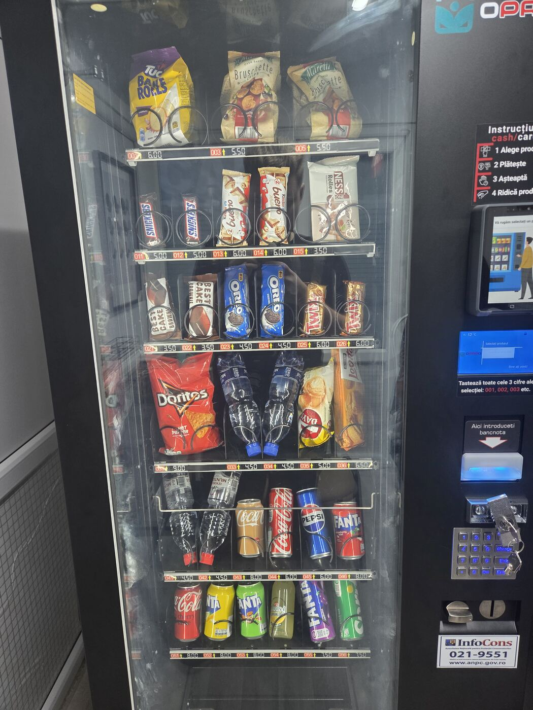
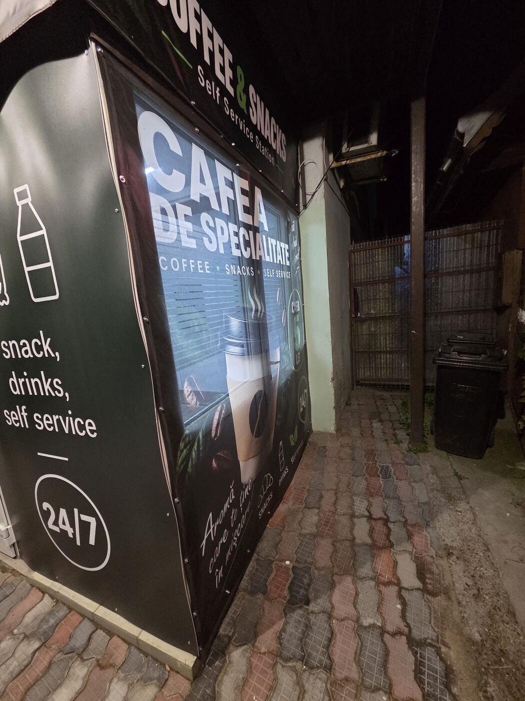
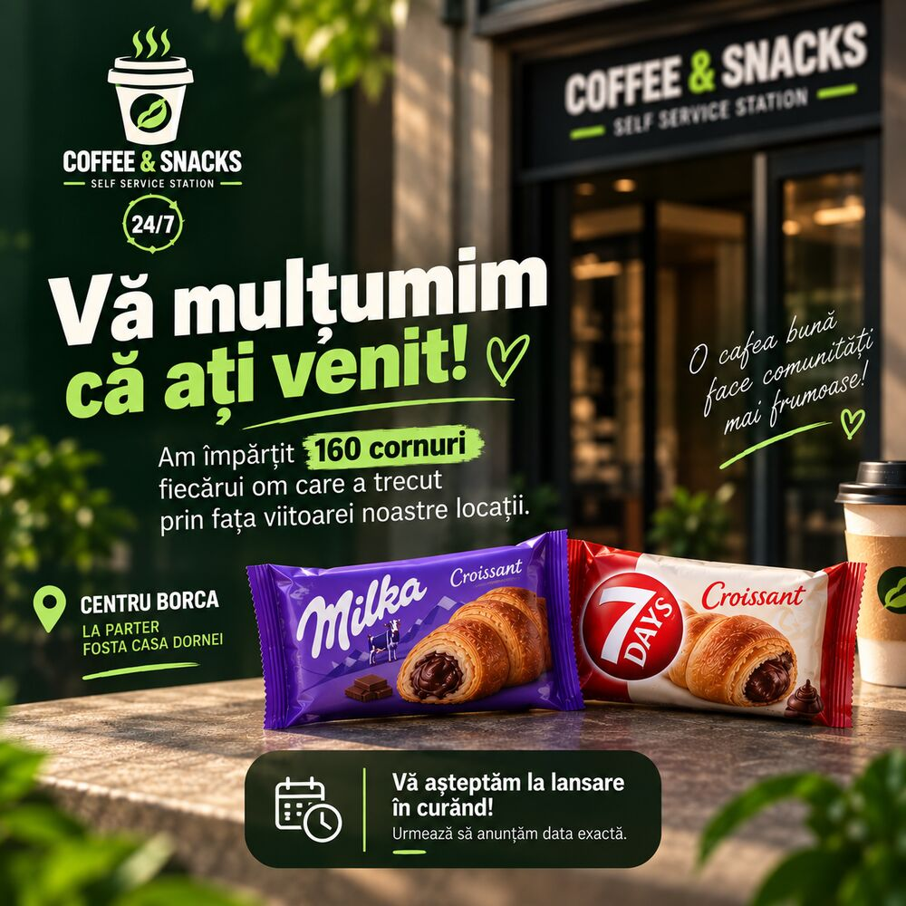

Cafea de specialitate, zi și noapteAromă care te ține în mișcare!
Espresso, cappuccino, ciocolată caldă, snacks și băuturi reci — într-un spațiu curat și luminos din centrul Borca, deschis non-stop. Intri, alegi, plătești și pleci cu cafeaua în mână.
Centru Borca · la parter, fosta Casa Dornei · Indicații rutiere

Deschis acum · 24/7 5LEICum arată la noi
Un spațiu mic, curat și luminos, cu supraveghere video și acces non-stop.





O cafea bună face comunitățile mai frumoase!
Ne găsești în 3 locuri
- Coffee & Snacks Borca — Str. Principală nr. 45, centru, la parter (fosta Casa Dornei). Non-stop.
- Simos Borca — espresso, cappuccino, latte, mokaccino, irish și ciocolată caldă, la 6 lei.
- Simos Broșteni — cafea, irish cappuccino și ciocolată caldă.
Vă mulțumim că ați venit!
Înainte de lansare am împărțit 160 de cornuri fiecărui om care a trecut prin fața viitoarei noastre locații din centrul Borca. Mulțumim pentru primirea caldă!
Împreună pentru comunitate!

Vrei un aparat Coffee & Snacks?
Ne extindem rețeaua. Instalăm gratuit aparate de cafea și snacks în magazine, birouri, școli și fabrici.